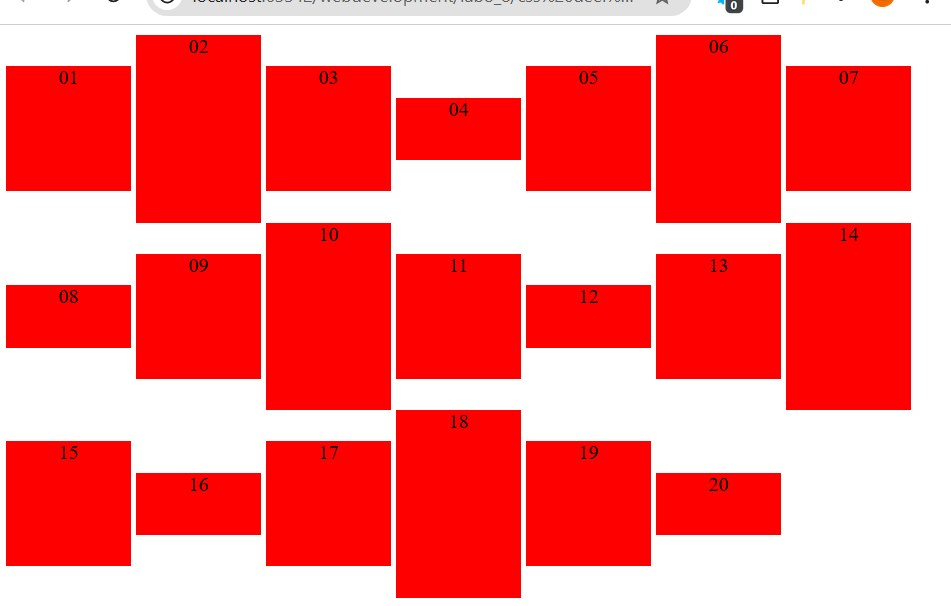
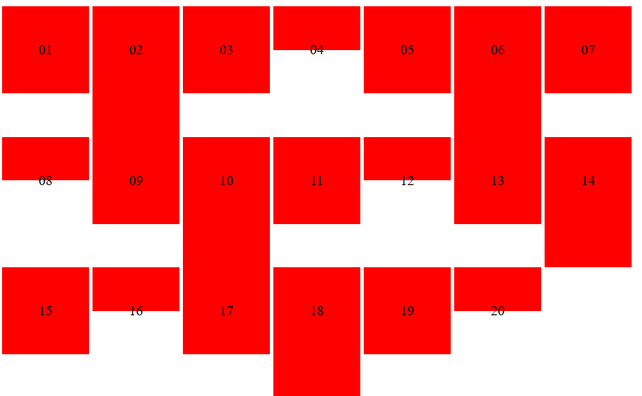
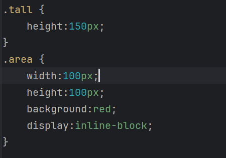

Omdat de text-align op center staat.
Wanneer je vertical-align op een inline-block toepast, gaat het alleen over de positie ten opzichte van andere inline-elementen in dezelfde line box, niet over centreren binnen het element zelf.
De rode achtergrondblokken worden gecentreerd.
Je kunt één enkele regel tekst verticaal centreren door de line-height gelijk te maken aan de hoogte van het element.
Via display: table-cell kun je inhoud in een element verticaal centreren.
De regel voor class tall krijgt voorrang omdat die later komt in de CSS-file en dus na de class area wordt gebruikt, waardoor die over de vorige regel wordt geschreven.
